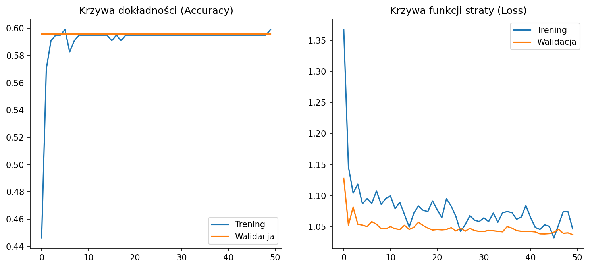

🚨 Pierwotny Raport Badawczy: Problem Dominacji Klasowej CNN
1. Założenia Eksperymentu Bazowego
Niniejszy dokument przedstawia wyjściowe (naiwne) podejście do uczenia sieci CNN bez implementacji algorytmów równoważenia zbioru danych. Celowo zignorowano asymetrię liczebnościową próbek, by zweryfikować zachowanie standardowej funkcji straty categorical_crossentropy na rzecz klasy dominującej.
W tym podejściu sieć osiąga pozornie wysoką celność (Accuracy ok. 60%), która wynika wyłącznie z faktu, że klasa NEUTROPHIL stanowi większość zbioru. Model wykazuje lenistwo matematyczne i ignoruje rzadkie klasy komórek.
2. Podejście Klasyczne CV (L3) - Stan Odniesienia
Przetwarzanie obrazów dla 4 oficjalnych klas (bez bazofili)...
--- RESTRUKTURYZACJA DANYCH ZAKOŃCZONA (OSTATECZNE 4 KLASY) ---
Neutrofile: 237 | Eozynofile: 88 | Monocyty: 39 | Limfocyty: 2
=========== RAPORT ANALITYCZNY CV (4 KLASY) ==============
1) WYKRYWANIE OGÓŁEM: 363/408 komórek (88.97%)
2) KLASYFIKACJA TYPÓW (Accuracy): 48.04%
=================================================
================ RAPORT KLASYFIKACJI (L3) ================
precision recall f1-score support
EOSINOPHIL 0.36 0.33 0.34 88
LYMPHOCYTE 1.00 0.06 0.11 33
MONOCYTE 0.08 0.15 0.11 20
NEUTROPHIL 0.71 0.79 0.75 206
accuracy 0.56 347
macro avg 0.54 0.33 0.33 347
weighted avg 0.61 0.56 0.55 347
Wizualizacja Wyników Klasycznych:
⚠️ Nie znaleziono pliku segmentacja_klasyczna_l3.png
Graficzna Macierz Pomyłek - L3

3. Naiwna Sieć CNN (L5_unweighted) - Wyniki i Patologie Uczenia
Poniższe logi oraz macierz pomyłek obrazują brak zdolności generalizacji sieci dla klas: Eosinophil, Lymphocyte oraz Monocyte.
WARNING: All log messages before absl::InitializeLog() is called are written to STDERR
I0000 00:00:1781459558.493996 30028 port.cc:153] oneDNN custom operations are on. You may see slightly different numerical results due to floating-point round-off errors from different computation orders. To turn them off, set the environment variable `TF_ENABLE_ONEDNN_OPTS=0`.
WARNING: All log messages before absl::InitializeLog() is called are written to STDERR
I0000 00:00:1781459565.013389 30028 port.cc:153] oneDNN custom operations are on. You may see slightly different numerical results due to floating-point round-off errors from different computation orders. To turn them off, set the environment variable `TF_ENABLE_ONEDNN_OPTS=0`.
--- L5: PRZYGOTOWANIE I PODZIAŁ DANYCH DLA 4 OFICJALNYCH KLAS ---
--- L5: PRZYGOTOWANIE I PODZIAŁ DANYCH DLA 4 OFICJALNYCH KLAS ---
Zbiory po odrzuceniu bazofili i braków: Trening: 242 | Walidacja: 52 | Test: 53
Found 242 validated image filenames belonging to 4 classes.
Found 52 validated image filenames belonging to 4 classes.
Found 53 validated image filenames belonging to 4 classes.
Klasy zmapowane w sieci CNN (4 klasy): ['NEUTROPHIL', 'EOSINOPHIL', 'MONOCYTE', 'LYMPHOCYTE']
--- L5: PROJEKTOWANIE ARCHITEKTURY MODELU CNN ---
I0000 00:00:1781459569.811152 30028 cpu_feature_guard.cc:227] This TensorFlow binary is optimized to use available CPU instructions in performance-critical operations.
To enable the following instructions: SSE3 SSE4.1 SSE4.2 AVX AVX2 FMA, in other operations, rebuild TensorFlow with the appropriate compiler flags.
WARNING:tensorflow:TensorFlow GPU support is not available on native Windows for TensorFlow >= 2.11. Even if CUDA/cuDNN are installed, GPU will not be used. Please use WSL2 or the TensorFlow-DirectML plugin.
Model: "sequential"
┌─────────────────────────────────┬────────────────────────┬───────────────┐
│ Layer (type) │ Output Shape │ Param # │
├─────────────────────────────────┼────────────────────────┼───────────────┤
│ conv2d (Conv2D) │ (None, 126, 126, 32) │ 896 │
├─────────────────────────────────┼────────────────────────┼───────────────┤
│ max_pooling2d (MaxPooling2D) │ (None, 63, 63, 32) │ 0 │
├─────────────────────────────────┼────────────────────────┼───────────────┤
│ conv2d_1 (Conv2D) │ (None, 61, 61, 64) │ 18,496 │
├─────────────────────────────────┼────────────────────────┼───────────────┤
│ max_pooling2d_1 (MaxPooling2D) │ (None, 30, 30, 64) │ 0 │
├─────────────────────────────────┼────────────────────────┼───────────────┤
│ conv2d_2 (Conv2D) │ (None, 28, 28, 128) │ 73,856 │
├─────────────────────────────────┼────────────────────────┼───────────────┤
│ max_pooling2d_2 (MaxPooling2D) │ (None, 14, 14, 128) │ 0 │
├─────────────────────────────────┼────────────────────────┼───────────────┤
│ flatten (Flatten) │ (None, 25088) │ 0 │
├─────────────────────────────────┼────────────────────────┼───────────────┤
│ dense (Dense) │ (None, 128) │ 3,211,392 │
├─────────────────────────────────┼────────────────────────┼───────────────┤
│ dropout (Dropout) │ (None, 128) │ 0 │
├─────────────────────────────────┼────────────────────────┼───────────────┤
│ dense_1 (Dense) │ (None, 4) │ 516 │
└─────────────────────────────────┴────────────────────────┴───────────────┘
Total params: 3,305,156 (12.61 MB)
Trainable params: 3,305,156 (12.61 MB)
Non-trainable params: 0 (0.00 B)
--- L5: TRENING SIECI NEURONOWEJ ---
[INFO] Rozpoczynanie treningu ze zbalansowanymi wagami klas. Logi będą wyświetlane na żywo w pipeline.
Epoch 1/50
4/4 - 6s - 2s/step - accuracy: 0.4463 - loss: 1.3678 - val_accuracy: 0.5962 - val_loss: 1.1277
Epoch 2/50
4/4 - 4s - 877ms/step - accuracy: 0.5702 - loss: 1.1466 - val_accuracy: 0.5962 - val_loss: 1.0524
Epoch 3/50
4/4 - 4s - 880ms/step - accuracy: 0.5909 - loss: 1.1041 - val_accuracy: 0.5962 - val_loss: 1.0813
Epoch 4/50
4/4 - 3s - 858ms/step - accuracy: 0.5950 - loss: 1.1184 - val_accuracy: 0.5962 - val_loss: 1.0539
Epoch 5/50
4/4 - 3s - 856ms/step - accuracy: 0.5950 - loss: 1.0866 - val_accuracy: 0.5962 - val_loss: 1.0526
Epoch 6/50
4/4 - 4s - 878ms/step - accuracy: 0.5992 - loss: 1.0952 - val_accuracy: 0.5962 - val_loss: 1.0501
Epoch 7/50
4/4 - 4s - 876ms/step - accuracy: 0.5826 - loss: 1.0872 - val_accuracy: 0.5962 - val_loss: 1.0581
Epoch 8/50
4/4 - 3s - 853ms/step - accuracy: 0.5909 - loss: 1.1076 - val_accuracy: 0.5962 - val_loss: 1.0539
Epoch 9/50
4/4 - 4s - 877ms/step - accuracy: 0.5950 - loss: 1.0858 - val_accuracy: 0.5962 - val_loss: 1.0467
Epoch 10/50
4/4 - 4s - 891ms/step - accuracy: 0.5950 - loss: 1.0955 - val_accuracy: 0.5962 - val_loss: 1.0464
Epoch 11/50
4/4 - 3s - 869ms/step - accuracy: 0.5950 - loss: 1.0995 - val_accuracy: 0.5962 - val_loss: 1.0502
Epoch 12/50
4/4 - 3s - 874ms/step - accuracy: 0.5950 - loss: 1.0787 - val_accuracy: 0.5962 - val_loss: 1.0465
Epoch 13/50
4/4 - 3s - 851ms/step - accuracy: 0.5950 - loss: 1.0891 - val_accuracy: 0.5962 - val_loss: 1.0451
Epoch 14/50
4/4 - 3s - 869ms/step - accuracy: 0.5950 - loss: 1.0694 - val_accuracy: 0.5962 - val_loss: 1.0523
Epoch 15/50
4/4 - 3s - 854ms/step - accuracy: 0.5950 - loss: 1.0496 - val_accuracy: 0.5962 - val_loss: 1.0453
Epoch 16/50
4/4 - 4s - 903ms/step - accuracy: 0.5909 - loss: 1.0719 - val_accuracy: 0.5962 - val_loss: 1.0491
Epoch 17/50
4/4 - 3s - 874ms/step - accuracy: 0.5950 - loss: 1.0832 - val_accuracy: 0.5962 - val_loss: 1.0569
Epoch 18/50
4/4 - 3s - 872ms/step - accuracy: 0.5909 - loss: 1.0762 - val_accuracy: 0.5962 - val_loss: 1.0519
Epoch 19/50
4/4 - 5s - 1s/step - accuracy: 0.5950 - loss: 1.0742 - val_accuracy: 0.5962 - val_loss: 1.0476
Epoch 20/50
4/4 - 3s - 849ms/step - accuracy: 0.5950 - loss: 1.0914 - val_accuracy: 0.5962 - val_loss: 1.0443
Epoch 21/50
4/4 - 3s - 858ms/step - accuracy: 0.5950 - loss: 1.0771 - val_accuracy: 0.5962 - val_loss: 1.0452
Epoch 22/50
4/4 - 3s - 874ms/step - accuracy: 0.5950 - loss: 1.0644 - val_accuracy: 0.5962 - val_loss: 1.0446
Epoch 23/50
4/4 - 4s - 913ms/step - accuracy: 0.5950 - loss: 1.0951 - val_accuracy: 0.5962 - val_loss: 1.0453
Epoch 24/50
4/4 - 4s - 957ms/step - accuracy: 0.5950 - loss: 1.0830 - val_accuracy: 0.5962 - val_loss: 1.0485
Epoch 25/50
4/4 - 4s - 886ms/step - accuracy: 0.5950 - loss: 1.0665 - val_accuracy: 0.5962 - val_loss: 1.0429
Epoch 26/50
4/4 - 4s - 877ms/step - accuracy: 0.5950 - loss: 1.0418 - val_accuracy: 0.5962 - val_loss: 1.0473
Epoch 27/50
4/4 - 3s - 851ms/step - accuracy: 0.5950 - loss: 1.0535 - val_accuracy: 0.5962 - val_loss: 1.0426
Epoch 28/50
4/4 - 4s - 898ms/step - accuracy: 0.5950 - loss: 1.0677 - val_accuracy: 0.5962 - val_loss: 1.0472
Epoch 29/50
4/4 - 4s - 885ms/step - accuracy: 0.5950 - loss: 1.0604 - val_accuracy: 0.5962 - val_loss: 1.0434
Epoch 30/50
4/4 - 4s - 895ms/step - accuracy: 0.5950 - loss: 1.0582 - val_accuracy: 0.5962 - val_loss: 1.0422
Epoch 31/50
4/4 - 4s - 888ms/step - accuracy: 0.5950 - loss: 1.0642 - val_accuracy: 0.5962 - val_loss: 1.0420
Epoch 32/50
4/4 - 4s - 881ms/step - accuracy: 0.5950 - loss: 1.0582 - val_accuracy: 0.5962 - val_loss: 1.0438
Epoch 33/50
4/4 - 3s - 862ms/step - accuracy: 0.5950 - loss: 1.0718 - val_accuracy: 0.5962 - val_loss: 1.0431
Epoch 34/50
4/4 - 4s - 908ms/step - accuracy: 0.5950 - loss: 1.0571 - val_accuracy: 0.5962 - val_loss: 1.0423
Epoch 35/50
4/4 - 4s - 880ms/step - accuracy: 0.5950 - loss: 1.0723 - val_accuracy: 0.5962 - val_loss: 1.0415
Epoch 36/50
4/4 - 4s - 875ms/step - accuracy: 0.5950 - loss: 1.0742 - val_accuracy: 0.5962 - val_loss: 1.0502
Epoch 37/50
4/4 - 3s - 854ms/step - accuracy: 0.5950 - loss: 1.0726 - val_accuracy: 0.5962 - val_loss: 1.0476
Epoch 38/50
4/4 - 4s - 880ms/step - accuracy: 0.5950 - loss: 1.0619 - val_accuracy: 0.5962 - val_loss: 1.0434
Epoch 39/50
4/4 - 3s - 842ms/step - accuracy: 0.5950 - loss: 1.0655 - val_accuracy: 0.5962 - val_loss: 1.0424
Epoch 40/50
4/4 - 4s - 878ms/step - accuracy: 0.5950 - loss: 1.0839 - val_accuracy: 0.5962 - val_loss: 1.0419
Epoch 41/50
4/4 - 4s - 895ms/step - accuracy: 0.5950 - loss: 1.0646 - val_accuracy: 0.5962 - val_loss: 1.0421
Epoch 42/50
4/4 - 3s - 859ms/step - accuracy: 0.5950 - loss: 1.0488 - val_accuracy: 0.5962 - val_loss: 1.0413
Epoch 43/50
4/4 - 3s - 869ms/step - accuracy: 0.5950 - loss: 1.0453 - val_accuracy: 0.5962 - val_loss: 1.0382
Epoch 44/50
4/4 - 4s - 904ms/step - accuracy: 0.5950 - loss: 1.0530 - val_accuracy: 0.5962 - val_loss: 1.0381
Epoch 45/50
4/4 - 3s - 831ms/step - accuracy: 0.5950 - loss: 1.0506 - val_accuracy: 0.5962 - val_loss: 1.0386
Epoch 46/50
4/4 - 4s - 896ms/step - accuracy: 0.5950 - loss: 1.0318 - val_accuracy: 0.5962 - val_loss: 1.0409
Epoch 47/50
4/4 - 3s - 843ms/step - accuracy: 0.5950 - loss: 1.0532 - val_accuracy: 0.5962 - val_loss: 1.0454
Epoch 48/50
4/4 - 6s - 1s/step - accuracy: 0.5950 - loss: 1.0743 - val_accuracy: 0.5962 - val_loss: 1.0392
Epoch 49/50
4/4 - 4s - 889ms/step - accuracy: 0.5950 - loss: 1.0740 - val_accuracy: 0.5962 - val_loss: 1.0398
Epoch 50/50
4/4 - 3s - 850ms/step - accuracy: 0.5992 - loss: 1.0464 - val_accuracy: 0.5962 - val_loss: 1.0370
[INFO] Wykres krzywych uczenia został zapisany jako 'krzywe_uczenia_cnn_l5_unweighted.png'.
--- L5: URUCHAMIANIE PREDYKCJI NA ZBIORZE TESTOWYM ---
[1m1/1[0m [32m━━━━━━━━━━━━━━━━━━━━[0m[37m[0m [1m0s[0m 373ms/step
[1m1/1[0m [32m━━━━━━━━━━━━━━━━━━━━[0m[37m[0m [1m0s[0m 383ms/step
================ MACIERZ POMYŁEK - SIEĆ CNN (L5) ================
Predykcja NEUTROPHIL ... Predykcja LYMPHOCYTE
Prawdziwy NEUTROPHIL 31 ... 0
Prawdziwy EOSINOPHIL 14 ... 0
Prawdziwy MONOCYTE 3 ... 0
Prawdziwy LYMPHOCYTE 5 ... 0
[4 rows x 4 columns]
================ RAPORT KLASYFIKACJI / METRYKI (L5) ================
precision recall f1-score support
NEUTROPHIL 0.58 1.00 0.74 31
EOSINOPHIL 0.00 0.00 0.00 14
MONOCYTE 0.00 0.00 0.00 3
LYMPHOCYTE 0.00 0.00 0.00 5
accuracy 0.58 53
macro avg 0.15 0.25 0.18 53
weighted avg 0.34 0.58 0.43 53
========================================================================
--- L5: URUCHAMIANIE PREDYKCJI NA ZBIORZE TESTOWYM ---
[1m1/1[0m [32m━━━━━━━━━━━━━━━━━━━━[0m[37m[0m [1m0s[0m 305ms/step
[1m1/1[0m [32m━━━━━━━━━━━━━━━━━━━━[0m[37m[0m [1m0s[0m 313ms/step
================ RAPORT KLASYFIKACJI / METRYKI (L5) ================
precision recall f1-score support
NEUTROPHIL 0.58 1.00 0.74 31
EOSINOPHIL 0.00 0.00 0.00 14
MONOCYTE 0.00 0.00 0.00 3
LYMPHOCYTE 0.00 0.00 0.00 5
accuracy 0.58 53
macro avg 0.15 0.25 0.18 53
weighted avg 0.34 0.58 0.43 53
Wizualizacja Patologii Uczenia (Płaskie linie celności i zablokowana strata):

Graficzna Macierz Pomyłek - CNN (Bez wag)
4. Krytyczny Wniosek Badawczy
Przedstawiony powyżej wykres predykcji (macierz pomyłek w formie pojedynczej, pionowej kolumny) udowadnia, że bez interwencji w postaci wag klasowych lub modyfikacji struktury etykiet, model staje się bezużyteczny z punktu widzenia diagnostyki medycznej, mimo "ładnego" wykresu celności ogólnej.